Слънчев бряг
През далечната 1958г. започва изграждането на Слънчев бряг като туристическа дестинация. Първоначалната идея е създаване на спокоен курорт за семейно почиващите туристи. През последите години обаче Слънчев бряг има друга слава. Ако трябва да използваме цифри нещата изглеждат така: леглова база 200 000 легла, застроена площ 80%. Бетонът, излят тук, е повече дори от този в столичния ж.к. Люлин. Единствено морското дъно не е бетонирано все още. Слънчев бряг предлага най-различни забавления, например ром да ви повози с каруца на плажа. Тук можете да се почувствате специално, стига обаче да можете да си го позволите. И такситата могат да ви возят по специални тарифи (30 км. за 50 евро). Бирата също може да е специална, ако платите 6 лева за нея. Повечето инвеститори и собственици на тези 5 звездни замъци по крайбрежието си мислят, че по осем километровата плажна ивица на Слънчев бряг тече река от пари и тя просто трябва да бъде събрана и отново инвестирана в новите решения на съвременните архитекти на дворци. Уви, повечето от тях нямат представа, че нещата не приключват добре, когато предлагането превишава търсенето. Изобилието от дискотеки, барове, казина, еротични клубове, голф игрища, открити и закрити басейни превръщат Слънчев бряг в рай за чуждестранни туристи - немци, руснаци, скандинавци, англичани. Но дори и китайци да идват тук, хотелите няма да могат да си изплатят задълженията към банките. Слънчев бряг определено се опитва да съперничи на испанските курорти от ранга на Палма де Майорка и Ибиса. Единственото нещо, което ги свързва, е че диджей като Roger Sanchez пускат музика в тях. Дори канализацията в най–големият курорт на България не може да се конкурира с тази в Палма де Майорка.
- 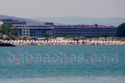
Хотелски комплекс - 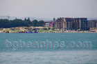
Модерни дворци - 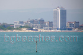
Поглед към хотелите - 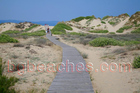
Дюните на Слънчев бряг - 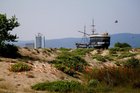
Кораб - 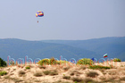
Българското знаме - 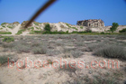
Растителност - 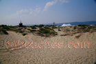
Пясък - 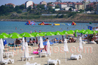
Забавления - 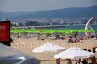
Пренаселен - 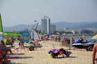
Плажната ивица на Слънчев бряг - 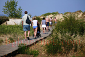
Летовници - 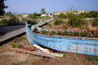
Цветя в лодка - 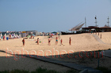
Волейбол - 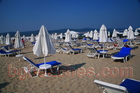
Всичко е платено - 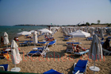
Дрямка - 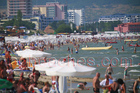
Тълпа - 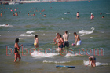
Слънчеви очила - 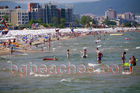
Недовършен - 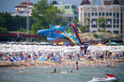
Водна пързалка - 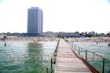
Хотел - 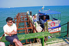
Лодка - 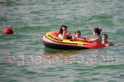
Сами в морето - 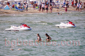
Джетове и момичета - 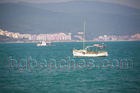
Яхти в морето - 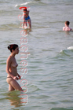
Русалка - 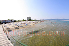
Крайбрежие - 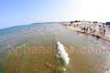
Вълна - 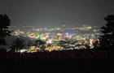
Нощен живот